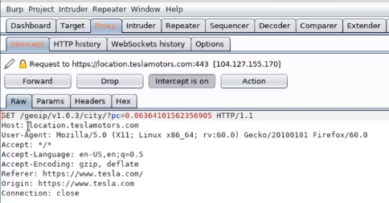

setup firefox to utilize burpsuite
go to preference -> network proxy
select mannual
HTTPS proxy : 127.0.0.1
port : 8080
check the check box
now on new tab
https://burp
allow ca certificate
now click to ca and save the certificate
now, in firefox setting -> privacy and security
go to down
view certifcate
import certifcate
select cacert.der open
now we are all set to use burpsuite
search tesla.com on and burpsuite will intercept all traffic for us then we can analyze it
-> we can see trafic all traffic
-> we can modify the traffic
also it give many information as we request and get resopnse from server
